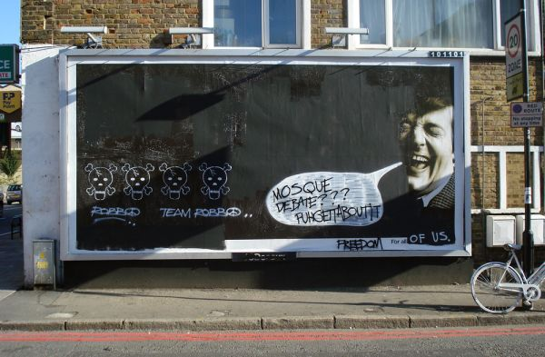
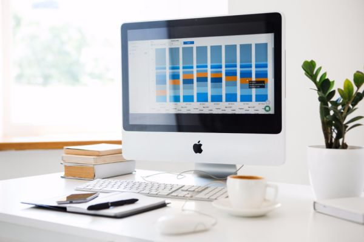

Brand strategy
Positioning, architecture and the story that holds them together. It is the part everything else gets built on, so we finish it before anyone opens a design file.
See it in the workMost briefs start there too.
A logo. A post. A fifteen-second cut. Every fragment matters, and none of it works until it adds up to something.
BLUE starts at the widest setting — the business, the category, the room where the decision actually gets made — then makes every piece earn its place in the frame.
Six campaigns where the whole picture was the point. Drag the rail, or use the arrows.
 Halcyon Air
A national carrier repositioned in eleven weeks, cabin to campaign.
Halcyon Air
A national carrier repositioned in eleven weeks, cabin to campaign.

Norlake One idea across film, out-of-home and retail. Share up 4.2 points in a season. Meridian Bank One system holding 260 branches, four products and a rebuilt app. Ninth Street
A two-day shoot that fed nine months of feed without repeating itself.
Ninth Street
A two-day shoot that fed nine months of feed without repeating itself.
 Orbit
A city launch built backwards from the waiting list. Sold out in nine days.
Orbit
A city launch built backwards from the waiting list. Sold out in nine days.
 The Ridge
Direct bookings up 38% by removing three steps and one bad promise.
The Ridge
Direct bookings up 38% by removing three steps and one bad promise.
They sit on the same floor and answer to the same idea. That is the whole trick.
Positioning, architecture and the story that holds them together. It is the part everything else gets built on, so we finish it before anyone opens a design file.
See it in the work
One idea, built to travel — film, print, out-of-home, and the feed. If it only works in the deck, it goes back.
See it in the work
Film, stills and motion made in-house, then cut for the platform it is going to live on. The people who sold the idea are on set for it.
See it in the work
Planning and buying that answer to the same idea as the creative, not to a separate spreadsheet in a different building.
See it in the work
Sites, launches and platforms where the brand has to work, not just look right. Designed, built and measured by the same team.
See it in the workFive stages. Each one widens the frame a little further, so nothing gets decided before we can see what it touches. Open it yourself.
We interrogate it before we accept it. Half the work is agreeing on the real problem.
I need for , and I want to start .
14 Road 231, Degla
Maadi, Cairo 11431
Egypt